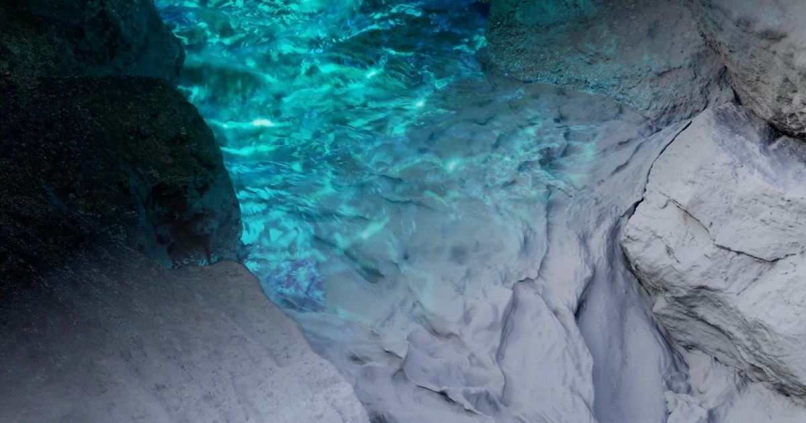

自學創作者公開 Houdini 水體特效拆解：從預演、FLIP 到最終燈光
Yuki Ito 的第二支水體特效作品集同步展示製作拆解，內容涵蓋泡沫預演、Houdini FLIP 粒子、碰撞網格與水下微光燈光調整。

Houdini ★★★★★
完整分析
水體技術流程
拆解把鏡頭製作依序呈現為場景預演、流體模擬設定與最終渲染，並具體展示泡沫、FLIP 粒子、碰撞網格及燈光調整。
製作影響與能力累積
Ito 在工作與週末持續自學 Houdini、Nuke；可確認的成果是水體行為與寫實渲染獲資深創作者肯定，但來源未量化練習時數。
可驗證的畫面重點
作品集可直接核對泡沫配置、碰撞水體與水面下方微光三項處理，另有幻想發光、寫實泡沫與海岸岩石碰撞案例；來源沒有粒子數量、解算時間或硬體效能數據。
BRIEF｜來源已驗證；證據深度較有限，完整分析會明確區分已知資訊與待驗證事項。